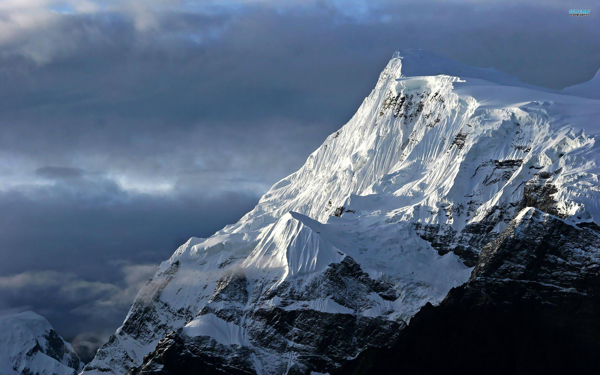
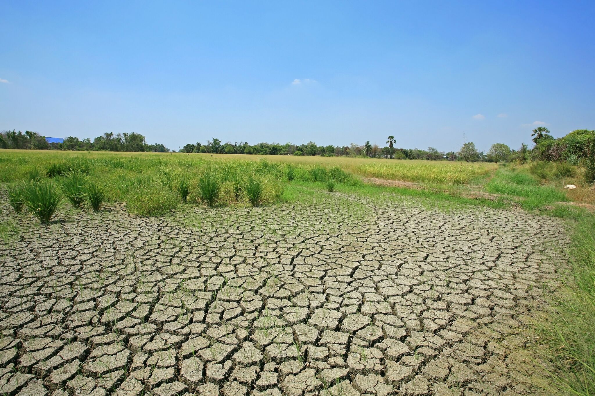
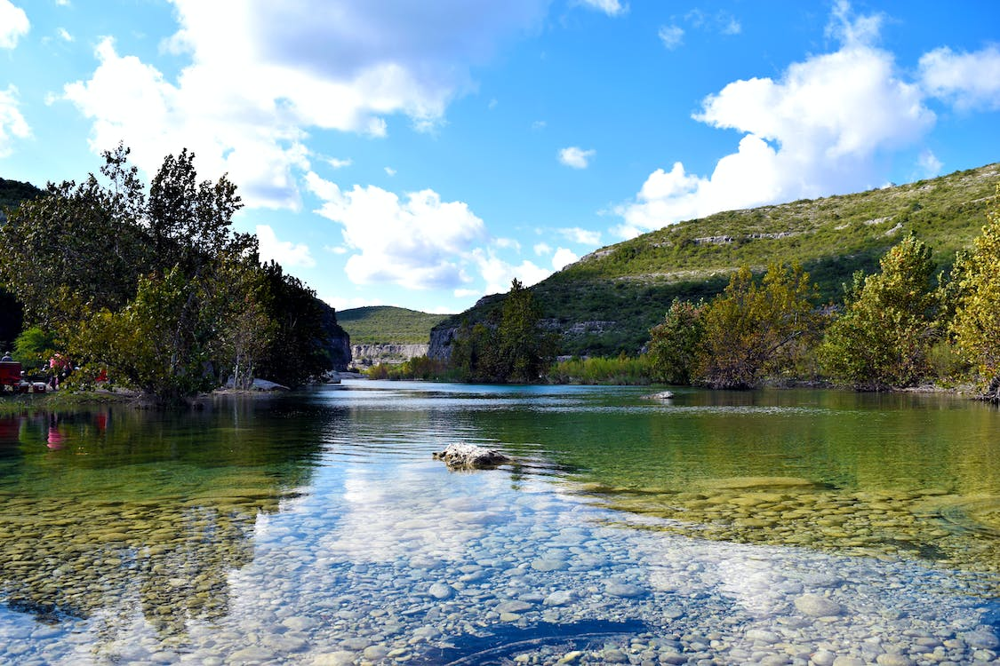
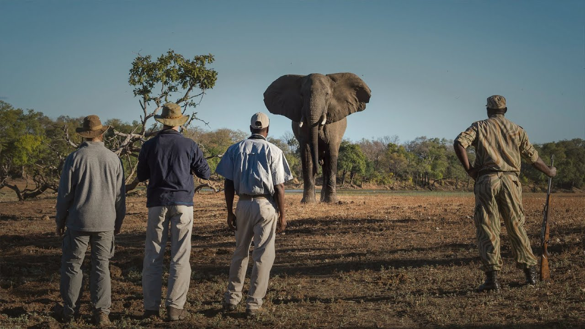
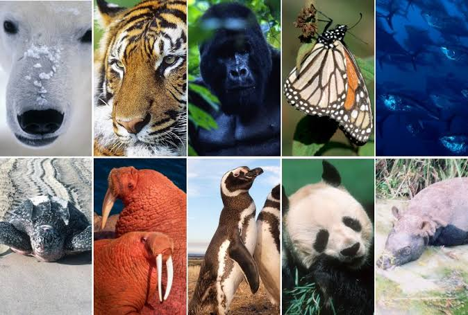

MOUNTAIN COMMUNITIES
Definition : Mountain groups are called mountain ranges. They consist of a series of mountains or hills arranged in a line and connected by high ground. Mountain ranges can vary in size, shape, and elevation.
Problem :
Mountains are vital sources of water, energy, biodiversity.However, they are also facing multiple threats from human activities and climate change.Some of the problems that mountains face include land degradation, deforestation, natural disasters, pollution, loss of wildlife, melting glaciers, and armed conflicts.

How to Conserve them ?
Mountains are vital for the health and well-being of humans and nature, but they face many threats from climate change, deforestation, mining, and tourism.
To conserve mountains, we need to take actions that protect their biodiversity, ecosystems, and cultures, such as supporting local communities, promoting sustainable practices, reducing greenhouse gas emissions, and raising awareness. By doing so, we can preserve the beauty and value of mountains for ourselves and future generations.
How to use them sustainably ?
To use mountains sustainably, we need to balance the needs of the local communities and the global population, while preserving the ecological and cultural diversity of the mountain regions.
This can be achieved by promoting responsible tourism, supporting indigenous knowledge and practices, enhancing adaptive capacity and resilience, and fostering cooperation and innovation. By doing so, we can ensure that mountains continue to provide valuable resources and services for present and future generation.

Spread of Mountains over world
DISINTEGRATED LAND RESOURCES
Meaning : These are lands that have been degraded or eroded due to natural or human factors, such as floods, droughts, overgrazing, deforestation, mining, etc. Disintegrated land resources lose their fertility, productivity, and biodiversity, and pose a threat to the environment and human well-being.
Problem :
Disintegrated land resources are lands that have been degraded or eroded due to natural or human factors, such as floods, droughts, overgrazing, deforestation, mining, etc. They lose their fertility, productivity, and biodiversity, and pose a threat to the environment and human well-being.

How to protect desertifies land ?
Desertified land is land that has become desert due to natural or human factors, such as climate change, drought, overgrazing, deforestation, mining, etc. It loses its fertility, productivity, and biodiversity, and poses a threat to the environment and human well-being.
To protect desertified land, we need to adopt responsible agricultural practices, such as using seed drills instead of tilling, rotating crops and herds, and updating irrigation systems. We also need to make a difference locally and globally, such as supporting the Great Green Wall Initiative, creating a culture of prevention, and raising awareness.
How to reserve drought affected land ?
Drought affected land is land that has suffered from water scarcity and reduced soil moisture due to natural or human factors, such as climate change, overexploitation, poor irrigation, etc.
To restore drought affected land, we need to adopt sustainable land management practices, such as improving water harvesting and conservation, enhancing soil organic matter and fertility, promoting agroforestry and crop diversification, and preventing land degradation and erosion.
How to restore flood affected land ?
Flood affected land is land that has been submerged or damaged by water due to heavy rainfall, river overflow, or dam breach.
To restore flood affected land, we need to adopt measures such as draining excess water, removing debris and sediments, applying organic fertilizers and compost, replanting crops and trees, and improving drainage and irrigation systems.
FRESHWATER ECOSYSTEM
Meaning : A freshwater ecosystem is a complex network of interconnected habitats characterized by low salt content. It includes various water bodies such as rivers, lakes, ponds, wetlands, and even groundwater systems.
Problem :
Freshwater ecosystems are among the most threatened in the world, due to overfishing, pollution, disruption of the landscape, climate change, and other human activities. These threats can cause soil erosion, nutrient loss, crop failure, contamination of water sources, loss of biodiversity, and reduced availability and quality of fresh water for human use.

How to protect freshwater sources ?
To protect freshwater sources, we need to adopt sustainable water management practices, such as improving water harvesting and conservation, enhancing soil quality and fertility, promoting agroforestry and crop diversification, and preventing land degradation and erosion. We also need to support local communities, indigenous knowledge, and cooperation among stakeholders.
How to use them reliably ?
Fresh water is a scarce and vital resource for life, but it is unevenly distributed and often wasted or polluted.
To use fresh water more reliably, we need to adopt strategies that conserve, reuse, and protect this precious resource. Some of these strategies include: installing water-efficient appliances and fixtures, collecting rainwater for irrigation and other purposes, treating wastewater before discharging it into the environment, choosing sustainable food and energy sources, and supporting policies and organizations that promote water security and justice.
POACHING AND TRAFFICKING
Meaning : Poaching and trafficking are two related forms of illegal wildlife trade, which is a major threat to many species and ecosystems. Poaching is the unlawful killing, capturing, or harvesting of wild animals or plants, often for their parts or products. Trafficking is the transport, sale, or exchange of these animals or plants, or their derivatives, across borders or within countries.
Problem :
Poaching and trafficking are serious problems that affect wildlife, ecosystems, and human societies. They cause the loss of biodiversity, the spread of diseases, the disruption of ecological balance, the support of criminal networks, the violation of international laws, and the endangerment of local communities.

How to stop smugling of herbs and plants ?
Smuggling of herbs and plants is a form of illegal wildlife trade that harms biodiversity, human health, and security. To stop this activity, some possible measures are: increasing the awareness and enforcement of laws and regulations, enhancing the security and inspection of ports and borders, supporting the conservation and sustainable use of natural resources, and reducing the demand and supply of smuggled products.
How to stop illegal trading of animals ?
To stop this activity, some possible actions are:
Supporting anti-trafficking people and projects that expose and close key hot-spots and routes where illegal products are being traded. Never buying wild animal products or products derived from wildlife, such as ivory, tiger bone, rhino horn, or exotic pets. Being a responsible consumer and choosing sustainably sourced products, such as wood, palm oil, and seafood. Being a savvy tourist and avoiding experiences or souvenirs that involve endangered or exotic animals.
ENDANGERED SPECIES
Meaning : An endangered species is a type of organism that is threatened by extinction because of a sudden rapid decrease in its population or a loss of its critical habitat. Endangered species may be at risk due to factors such as habitat loss, poaching, and invasive species.
Problem :
Endangered species are animals and plants that are at risk of extinction due to human activities or natural causes. Some of the problems caused by endangered species are: Loss of biodiversity, loss of ecosystem services, loss of genetic resources and loss of cultural heritage.

Extent species with great features
Extinct species are those that have completely disappeared from the Earth due to various causes, such as natural disasters, human activities, or evolutionary problems. Some extinct species had great features like flora and fauna.
For example, some of the extinct species with great features like flora and fauna are:- The dodo, a flightless bird that lived on the island of Mauritius and was hunted to extinction by humans and introduced animals.
- The woolly mammoth, a hairy elephant that roamed the northern regions of Eurasia and North America during the Ice Age. The woolly mammoth was adapted to the cold and dry climate and fed on grasses, sedges, and shrubs.
- The glossopteris, a seed-bearing tree that grew in the southern continents of Gondwana during the Permian period. The glossopteris had tongue-shaped leaves and produced large seeds.
Frequently Asked Questions about Sustainable Development Goal 15
Q: What is the 15th goal of sustainaible development ?
A: The 15th goal of sustainable development is SDG 15, Life on Land. It is concerned with the health of terrestrial ecosystems.
Q: Why is SDG 15 life on land important ?
A: SDG 15 Life on Land is important because it is concerned with the survival of humanity. Humans need land to provide the resources we need for survival, such as food, shelter, and water.
Q: Why should we care about life on land ?
A: We should care about life on land because humans are life on land. If land is not cared for, human existence is threatened.
Q:How can we protect our land environment ?
A:We can protect our land environment by meeting the targets of SDG 15. This SDG has set extensive and specific goals for nations to follow to implement policies that will preserve our terrestrial environments.
Q:How does climate change affect life on land ?
A: Climate change affects life on land because it threatens food sources and habitats that organisms depend on for survival.
Copyright © 2024